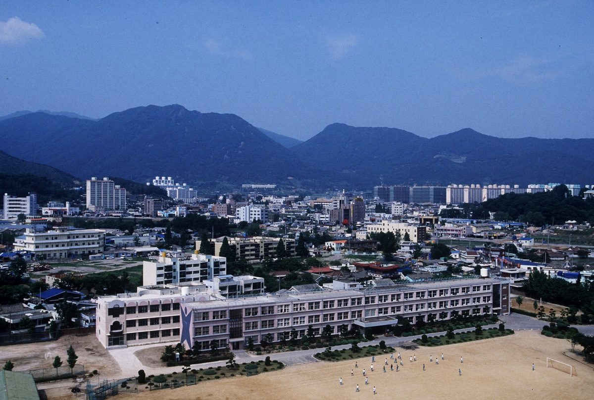

영산강유역환경청, 상수원 마을 햇빛소득마을 2030년까지 140곳 계획 설명…마을당 500kW 설치비 7억 원 수계기금 지원

전남댐주민연합회 토론회서 2027년부터 해마다 35곳 조성 계획·2027년 정부안 245억 원 소개…땅 임대료·인허가는 마을 몫, 주민 쪽은 수계기금 여유자금 약 900억 원을 주민 소득에 쓰자고 제안
영산강유역환경청이 영산강·섬진강 수계기금으로 상수원보호구역과 수변구역 마을에 2027년부터 해마다 35곳씩, 2030년까지 모두 140곳의 햇빛소득마을을 만드는 계획을 27일 주민 토론회에서 설명했다. 임근창 영산강유역환경청 수생태과 팀장은 2027년 정부안에 사업비 245억 원이 반영됐고, 마을당 500kW 태양광 설치비 7억 원을 기준으로 수계기금에서 전액 지원하는 방식이라고 밝혔으며, 이 예산은 아직 국회 확정 전인 정부안 단계다. 다만 땅 임대료와 인허가 비용은 마을이 따로 내야 하고, 주민 10명 이상이 협동조합을 꾸리고 마을 주민 70% 이상이 동의해야 하며, 발전소 부지와 전력계통도 갖춰야 지원을 받을 수 있다. 전남댐주민연합회와 영산강유역환경청, 전국댐법과제도개선위원회가 화순 하니움문화스포츠센터에서 함께 연 이날 토론회에는 주민 200여 명이 모였고, 주민들은 부지 부족과 인허가 규제가 참여를 가로막는다며 수계기금으로 사들인 땅을 사업에 쓰게 해 달라고 요청했다. 김광진 전남댐주민연합회장은 약 900억 원에 이르는 수계기금 여유자금을 주민 소득을 늘리는 데 쓰고 수계관리위원회 사무국을 독립시켜 댐 주민이 위원회에 직접 참여하게 하자고 제안했으며, 동복댐 증축으로 수몰될 주민을 위한 연금제도와 용수단가 52.7원→100원 인상, 주민지원 비율 22%→50% 상향도 주민 쪽 개선 과제로 내놓았다. 김 회장은 주민들이 국가 발전을 위해 희생해 온 만큼 "특별한 보상과 배려가 필요하다"고 말했다.
시민에너지 관점
설치비 7억 원을 기금에서 모두 대 주겠다는 것은 큰 진전이지만, 땅 임대료와 인허가, 계통 확보를 마을 몫으로 남겨 두면 오랜 규제로 땅을 쓰기 어려운 상수원 마을이 다시 문턱 앞에서 빠질 수 있다. 공공 기금으로 산 땅을 마을에 내주면 특혜라는 반론이 나올 수 있지만, 그 땅은 상수원 규제를 견뎌 온 주민을 돕자고 만든 기금으로 산 공유자원이고, 웨일스 정부가 2017년 2030년까지 재생에너지 설비 1GW를 지역 소유로 두겠다는 목표를 세운 것처럼 공공이 지역 소유를 정책 목표로 삼는 일은 낯설지 않다. 마을 협동조합이 발전소의 주인이 되면 보상은 한 번 받고 끝나는 지원금이 아니라 해마다 마을에 남는 소득이 된다. 수계관리위원회와 환경청은 2027년 사업 지침을 정하기 전에 기금 매입 토지 활용과 계통 확보 지원을 지침에 넣고, 그 논의 자리에 댐 주민을 직접 앉혀야 한다.
출처: 한국시민기자협회 뉴스포털1 2026-10-28 고성중 원문 보기
韓国・栄山江流域環境庁、上水源地域の太陽光所得村を2030年までに140か所とする計画を説明…1村あたり500kW、設置費7億ウォンを水系基金で支援
全南ダム住民連合会の討論会で2027年から毎年35か所の造成計画と2027年政府案245億ウォンを紹介…土地の賃料・許認可は村の負担、住民側は水系基金の余裕資金約900億ウォンを住民所得に使うよう提案
韓国の栄山江流域環境庁は27日の住民討論会で、栄山江・蟾津江水系基金を使い、上水源保護区域と水辺区域の村に2027年から毎年35か所ずつ、2030年までに計140か所の太陽光所得村をつくる計画を説明した。栄山江流域環境庁水生態課のイム・グンチャン チーム長は、2027年の政府案に事業費245億ウォンが反映され、1村あたり500kWの太陽光設置費7億ウォンを基準に水系基金から全額を支援する方式だと述べたが、この予算はまだ国会で確定する前の政府案の段階だ。ただし土地の賃料と許認可費用は村が別に負担し、住民10人以上で協同組合をつくって村の住民の70％以上が同意する必要があり、発電所の用地と電力系統も確保しなければ支援を受けられない。全南ダム住民連合会、栄山江流域環境庁、全国ダム法と制度改善委員会が和順（ファスン）のハニウム文化スポーツセンターで共同開催したこの日の討論会には住民約200人が集まり、住民らは用地不足と許認可規制が参加を妨げているとして、水系基金で買い取った土地を事業に使えるようにしてほしいと求めた。全南ダム住民連合会のキム・グァンジン会長は、約900億ウォンにのぼる水系基金の余裕資金を住民所得の向上に使い、水系管理委員会の事務局を独立させてダム住民が委員会に直接参加できるようにすべきだと提案し、同福（トンボク）ダムのかさ上げで水没する予定の住民のための年金制度や、用水単価の52.7ウォンから100ウォンへの引き上げ、住民支援比率の22％から50％への引き上げも住民側の改善課題として示した。キム会長は、住民が国の発展のために犠牲を払ってきた以上、「特別な補償と配慮が必要だ」と語った。
市民エネルギーの視点
設置費7億ウォンを基金ですべて賄うというのは大きな前進だが、土地の賃料や許認可、系統の確保を村の負担として残せば、長年の規制で土地を使いにくい上水源の村が再び入り口で取り残されかねない。公的基金で買った土地を村に提供するのは特恵だという反論も出うるが、その土地は上水源規制に耐えてきた住民を支えるためにつくられた基金で買った共有資源であり、ウェールズ政府が2017年に2030年までに再生可能エネルギー設備1GWを地域所有とする目標を掲げたように、公共が地域所有を政策目標に据えることは珍しくない。村の協同組合が発電所の所有者になれば、補償は一度受け取って終わる支援金ではなく、毎年村に残る所得になる。水系管理委員会と環境庁は2027年の事業指針を定める前に、基金で取得した土地の活用と系統確保の支援を指針に盛り込み、その議論の場にダム住民を直接加えるべきだ。
出典: 韓国市民記者協会ニュースポータル1 2026-10-28 コ・ソンジュン 原文を読む
韩国荣山江流域环境厅介绍上游水源地阳光收入村计划，至2030年建成140个…每村500千瓦、安装费7亿韩元由水系基金承担
在全南水库居民联合会讨论会上介绍自2027年起每年建设35个的计划及2027年政府预算案245亿韩元…土地租金和审批由村庄承担，居民方提议将约900亿韩元水系基金结余用于增加居民收入
韩国荣山江流域环境厅27日在居民讨论会上介绍，计划利用荣山江、蟾津江水系基金，自2027年起每年在水源保护区和水边区域的村庄建设35个阳光收入村，至2030年共建成140个。荣山江流域环境厅水生态科组长Lim Geun-chang表示，2027年政府预算案已列入项目经费245亿韩元，以每村500千瓦光伏的安装费7亿韩元为标准，由水系基金全额支持；不过这笔预算仍处于国会确定前的政府案阶段。但土地租金和审批费用须由村庄另行承担，还需由10名以上居民组建合作社并获得70%以上村民同意，同时必须具备电站用地和电网接入条件，才能获得支持。当天的讨论会由全南水库居民联合会、荣山江流域环境厅和全国水库法与制度改善委员会在和顺Hanium文化体育中心共同举办，约200名居民到场。居民们表示，用地不足和审批限制阻碍了参与，要求允许将水系基金购入的土地用于该项目。全南水库居民联合会会长Kim Gwang-jin提议，将约900亿韩元的水系基金结余资金用于增加居民收入，并让水系管理委员会秘书处独立，保障水库居民直接参与委员会；他还提出为因同福水库加高而将被淹没的居民建立养老金制度，把用水单价从52.7韩元提高到100韩元，把居民支援比例从22%提高到50%，作为居民方面的改进建议。Kim会长说，居民为国家发展作出了牺牲，“需要特别的补偿与关怀”。
市民能源视角
由基金全额承担7亿韩元安装费是一大进步，但如果把土地租金、审批和电网接入留给村庄自己解决，因长期管制而难以利用土地的水源地村庄可能再次被挡在门外。有人会说把公共基金购入的土地交给村庄是特殊照顾，但这些土地是用为扶助长期忍受水源管制的居民而设立的基金购入的公共资源；威尔士政府在2017年就提出到2030年使1吉瓦可再生能源装机归地方所有的目标，公共部门把地方所有作为政策目标并不罕见。村级合作社成为电站的主人，补偿就不再是一次性的补助，而是每年留在村里的收入。水系管理委员会和环境厅应在制定2027年项目指南之前，把基金购入土地的利用和电网接入支持写进指南，并让水库居民直接参与讨论。
来源: 韩国市民记者协会 News Portal 1 2026-10-28 Ko Seong-jung 查看原文
Yeongsan River Basin Environmental Office outlines plan for 140 Sunlight Income Villages in water-source areas by 2030, with river basin fund covering 700 million won installation cost per 500kW village plant
At a forum held by the South Jeolla dam residents' federation, officials presented a plan for 35 villages a year from 2027 and 24.5 billion won in the 2027 government budget proposal; land rent and permits fall to villages, while residents proposed using about 90 billion won in surplus fund money for local income
South Korea's Yeongsan River Basin Environmental Office told a residents' forum on 27 October that it plans to use the Yeongsan and Seomjin river basin fund to create 35 Sunlight Income Villages a year from 2027, 140 in total by 2030, in villages inside water-source protection zones and riparian buffer zones. Lim Geun-chang, a team leader in the office's aquatic ecosystem division, said 24.5 billion won had been included in the 2027 government budget proposal and that the fund would cover the full installation cost, set at 700 million won for a 500kW solar plant per village, though the money is still at the proposal stage and has yet to be approved by the National Assembly. Villages must, however, pay land rent and permit costs themselves, form a cooperative of at least 10 residents and win the consent of at least 70% of villagers, and secure a site and a grid connection before they can receive support. About 200 residents attended the forum, jointly held at the Hanium Culture and Sports Center in Hwasun by the South Jeolla Dam Residents' Federation, the environmental office and the National Committee for Dam Law and System Reform, and residents said a shortage of land and permit restrictions were keeping them out, asking to be allowed to use land the fund has bought. Kim Gwang-jin, head of the federation, proposed using about 90 billion won in surplus fund money to raise residents' incomes, making the secretariat of the river basin management committee independent and guaranteeing dam residents direct seats on the committee, and also put forward, as residents' reform proposals, a pension scheme for residents to be displaced by the raising of Dongbok Dam, an increase in the water charge from 52.7 won to 100 won and a rise in the share going to resident support from 22% to 50%. Having sacrificed for national development, residents now "need special compensation and consideration," Kim said.
Citizen Energy View
Covering the full 700 million won installation cost from the fund is a big step, but if land rent, permits and grid access are left to the villages, water-source villages long hemmed in by land-use rules may again be left at the door. Some may call it favouritism to hand fund-owned land to villages, but that land was bought with a fund created to support residents who have lived under water-source restrictions, making it a shared resource, and public bodies setting local ownership as a policy goal is nothing new: in 2017 the Welsh Government set a target for 1GW of renewable capacity in Wales to be locally owned by 2030. When village cooperatives own the plants, compensation stops being a one-off payment and becomes income that stays in the village every year. Before setting the 2027 programme guidelines, the river basin management committee and the environmental office should write the use of fund-owned land and support for grid connections into them, and give dam residents a direct seat at that table.
Source: News Portal 1 (Korea Citizen Reporters Association) 2026-10-28 Ko Seong-jung Read the original